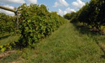

Ya en 1960 Pedro garcía, hijo y nieto de viticultores, había construido una bodega y empezaba a ampliar los viñedos familiares. Posteriormente, en 1975, adquiere sus primeras viñas en el paraje de los Vientos.
Durante los siguientes años y hasta principios de los 80 con la adquisición de la primera línea de embotellado, Pedro no cesa en su empeño por la modernización de la calidad.
Incorporación familiar

A inicios de los 90, ya incorporados sus 3 hijos, Antonio, Carlos y David al equipo de la bodega, comienza la andadura internacional, con presencia en las ferias de mayor relevancia del sector, viajes
de prospección, presentaciones y catas. Es este el momento de los primeros reconocimientos y distinciones tanto a nivel nacional como internacional. La inmersion en nuevos mercados provoca la necesiidad de un mayor desarrollo tecnologico de las instalaciones en pro de la calidad y una mayor competitividad.
Equipos de Maceración
Se sucede paulatinamente la adquisicion de los equipos de maceracion, estabilizacion y vinificacion mas modernos del mercado:
Maceracion carbonica con mesa de seleccion.
Maceradores tradicionales con control de temperatura.
Depositos maceradores "Sistema Ganymede"
Depositos medianos y pequeños que permitan vinificaciones selectivas
Y se mejoran gradualmente las lineas de produccion con los mas practicos sistemas de embotellado, etiquetado y envasado.